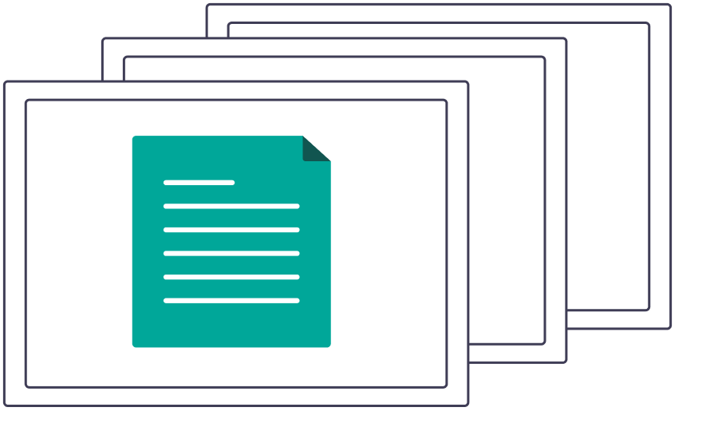
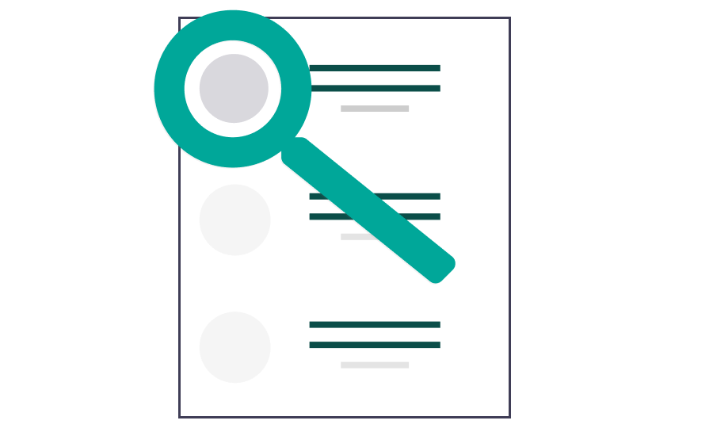
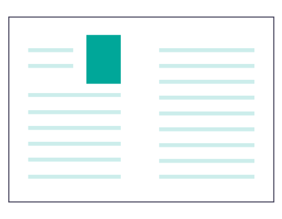

転職迷ってる？？
なら、電話一本で職務履歴書を作ってみよ
30分の電話で職務履歴書ができる
レジュメファクトリーでは、キャリアカウンセラーと電話をするだけで、 無料で職務経歴書を作成できます。さらに、ご自分で作成した職務履歴書をお送り頂くことでより一層採用担当に訴求する内容に出来るようコメントを追加することもできます！
人材紹介会社や特定の会社に応募するときに職務履歴書の叩き台になります。
電話で質問に答えるだけで、今まで見つけられなかった長所や短所を見つけられます。
職務履歴書をベースとした追加カウンセリングをして、一緒にあなたにあった会社を探していくことも可能です。
ビデオ通話のリンクをお渡しします。当日は、肩の力を抜いて気軽に質問にお答えください。
会話の内容から３日以内に職務履歴書を作成します。今までわからなかった強みや弱みを見つけましょう。
職務履歴書をより魅力的になるように添削させていただきます。体裁に指定はありません。
さらに深く助言が欲しい方には、より内容に沿ったキャリア相談を受けることができます。
A. カウンセリングデータを匿名化の上、蓄積・分析し、キャリア開発最適化のサービス開発に利用させて頂くためです。将来的には採用活用中の企業からスカウトメールが送付される機能を開発予定です。
A. 経験のあるキャリアカウンセラーが対応します。
A. 主に現状のスキルや転職の希望について質問していくので、思ったことをそのままご回答下さい。質問は人によって変わるので事前にご準備する必要はありません。
A. 申し込み時に候補を複数選択していただきます。 日程調整はこちらをクリック
A. あなた専用の職務履歴書を作成するため録音させていただきます。作成した後は個人が特定しない状態にした後、より向上したサービスを展開するために厳重に保管させていただきます。